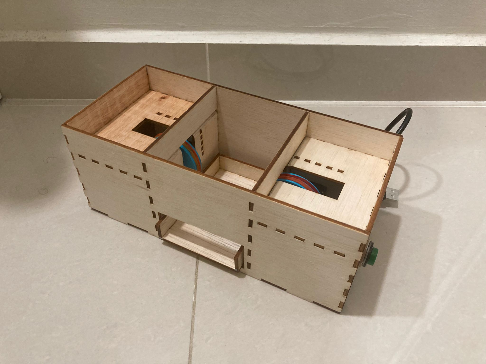

Introduction
In this webpage I will be documenting my final project: The Cardshuffler. I've always liked to play card games and since coming to poly, I my friends and I started to play them at every opportunity. So I decided to build a card shuffler as my project and here is where i got my inspiration from. In this webpage, I will give a brief desciption of the project, explain the design and fabrication process, what components will be used and how the project was coded.
Project Description
What does it do?
This is a machine used to shuffle cards. A deck of cards is split in half and placed onto a loading platform each. When a pushbutton is pressed, Continuous Servo Motors under each platform spins and shuffles the half decks into the middle chamber. The cards are collected in a tray at the bottom of the chamber. You can pull out the tray from the machine to extract the cards.
What are its features?
- 2 Continuous Servo Motors to shuffle cards
- 2 Loading platforms for half a deck of cards each
- Middle chamber containing a tray on a rail for cards to fall into
- A Push Button to on and off the shuffler
What will I be making?
|
Bill of Materials
|


CAD Design
Card Shuffler Frame
To be Continued...
Card Tray
To be Continued...
5cm Wheels
The design for the wheel is very simple. I only needed to sketch a 50 mm diameter circle and extrude it symmetrically by 5mm. This would give the wheel a total thickness of 1 cm.


Laser Cutting
To be Continued...
3D Printing
To be Continued...
Embedded Programming
Configuration
FS90R pins:

- Connect the ground and 5V pins from the arduino to the board.
- Connect the ground and 5V pins from the servos to the board vertically.
- Connect pin 11 to the push button on the board.
- Connect the pushbutton to ground on the board.
- Connect the signal pins of the servos to pin 10 (left motor, servo2) and pin 9 (right motor, servo1) on the arduino.

Please note that the tinkercad simulation does not have continuous servos motor and thus a standard 180 degree servo motor was used.
- 90 degrees = stop
- 180 degrees = full speed in one direction
Code
The coding of the cardshuffler was relatively simple. The only library needed was the Servo library to program the continous servos. Some things to take note is that sv1 rotates in the anti-clockwise direction whilst sv2 rotates in the clockwise direction. The delay must also be less than 1000ms or else too many cards on one side will not be shuffled.


Prototyping
To be Continued...
Final Product
To be Continued...